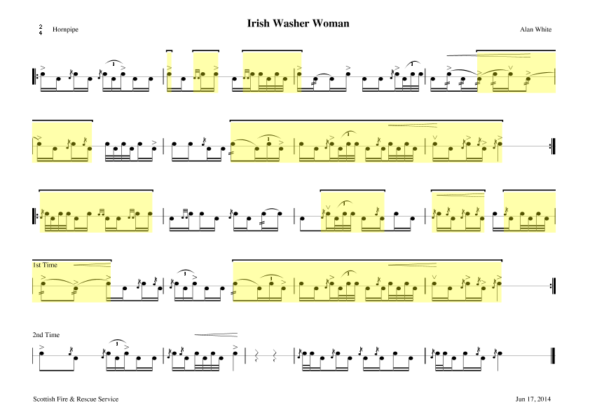
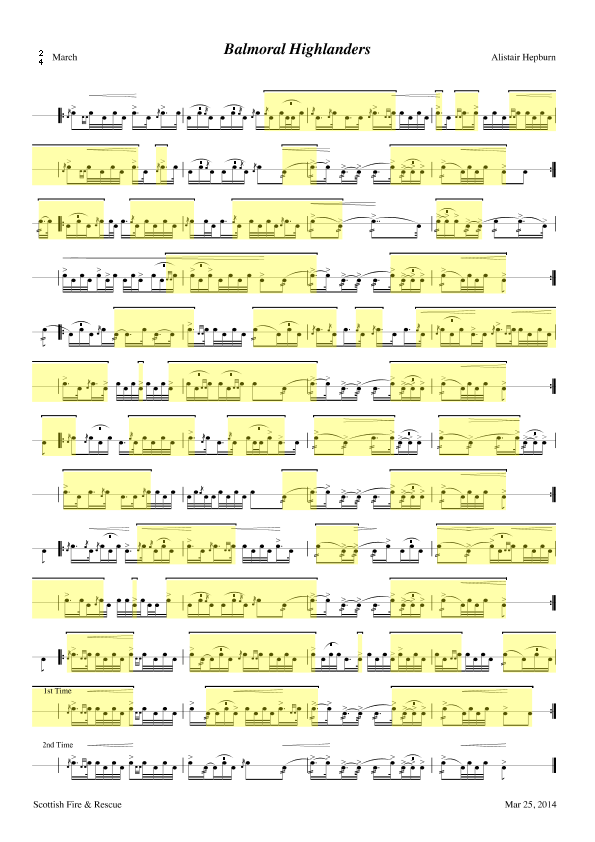
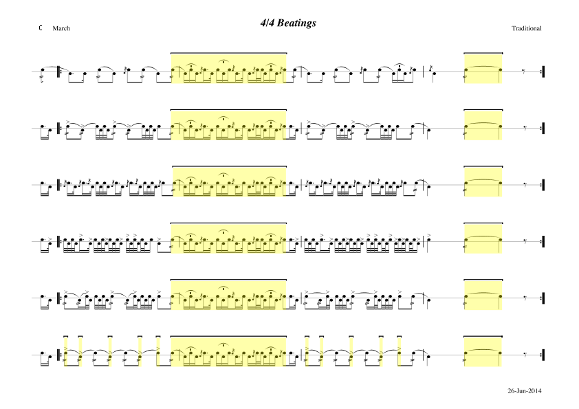

	<div class="off-canvas-wrapper">
		<div class="off-canvas-wrapper-inner" data-off-canvas-wrapper>
			<div class="off-canvas-content" data-off-canvas-content>

				<div class="expanded row">
					<div class="medium-9 large-10 medium-push-3 large-push-2 columns">

						<a href="#docs-menu"
							class="small secondary expanded button hide-for-medium">Jump
							to Nav</a>


						<header>
							<div class="columns text-center">
								<h1 class="docs-page-title">
									Drum Score Editor <small>Examples</small>
								</h1>
								<h5 class="subheader">A number of authors have kindly given permission
								to highlight their scores here.</h5>
							</div>
						</header>

						<hr>

						<!-- content here -->
						<div class="marketing-site-content-section">

						  <!-- <div class="marketing-site-content-section-img">
						    
						  </div> -->

							<div class="marketing-site-content-section-img">
						    
						  </div>

						  <div class="marketing-site-content-section-block">
						    <h3 class="marketing-site-content-section-block-header">Irish Washer Woman (Hornpipe)</h3>
						    <p class="marketing-site-content-section-block-subheader subheader">
								Hornpipe arrangement of the classic Irish Washer Woman, this time by yours truly ... mostly!</p>
						    <a href="../assets/img/irishwasherwomanhornpipe.ds" class="round button small">Download</a>
						  </div>

						  <div class="marketing-site-content-section-block small-order-2 medium-order-1">
						    <h3 class="marketing-site-content-section-block-header">Bobby Rae's 3/4 Set</h3>
						    <p class="marketing-site-content-section-block-subheader subheader">
								Many thanks to Jim Butler for giving us this setting from th elegendary Bobby Rae.</p>
						    <a href="../assets/img/bobbyrae34s.ds" class="round button small">Download</a>
						  </div>

						  <div class="marketing-site-content-section-img small-order-1 medium-order-2">
						    
						  </div>

							<div class="marketing-site-content-section-img">
						    
						  </div>

						  <div class="marketing-site-content-section-block">
						    <h3 class="marketing-site-content-section-block-header">The Mason's Apron</h3>
						    <p class="marketing-site-content-section-block-subheader subheader">
								Gordon Brown's famous hornpipe setting, as played by Boghall & Bathgate and Gordon himself in solos.</p>
						    <a href="../assets/img/themasonsapron.ds" class="round button small">Download</a>
						  </div>

						  <div class="marketing-site-content-section-block small-order-2 medium-order-1">
						    <h3 class="marketing-site-content-section-block-header">Balmoral Highlanders</h3>
						    <p class="marketing-site-content-section-block-subheader subheader">
									One of the big 2/4 marches played by many top bands. This arrangement is by Alistair Hepburn.
								</p>
						    <a href="../assets/img/balmoralhighlanders.ds" class="round button small">Download</a>
						  </div>

						  <div class="marketing-site-content-section-img small-order-1 medium-order-2">
						    
						  </div>

							<div class="marketing-site-content-section-img">
						    
						  </div>

						  <div class="marketing-site-content-section-block">
						    <h3 class="marketing-site-content-section-block-header">The Winnipeg Forger</h3>
						    <p class="marketing-site-content-section-block-subheader subheader">
								Davie Coll's catchy score for this one time favourite of the big bands.</p>
						    <a href="../assets/img/winnipegforger.ds" class="round button small">Download</a>
						  </div>

						  <div class="marketing-site-content-section-block small-order-2 medium-order-1">
						    <h3 class="marketing-site-content-section-block-header">4/4 Beatings</h3>
						    <p class="marketing-site-content-section-block-subheader subheader">
									Some standard 4/4 settings, quite dated now!
								</p>
						    <a href="../assets/img/44beatings.ds" class="round button small">Download</a>
						  </div>

						  <div class="marketing-site-content-section-img small-order-1 medium-order-2">
						    
						  </div>

						</div>


						<!-- and before here -->


					</div>

					{{> navigation}}


				</div>

			</div>
		</div>
	</div>
